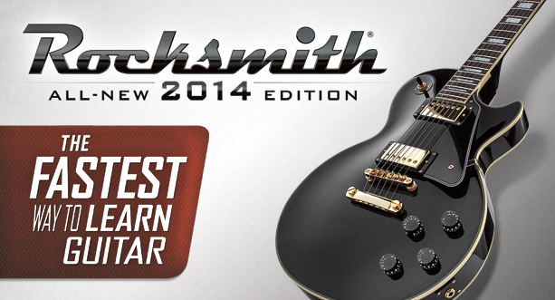
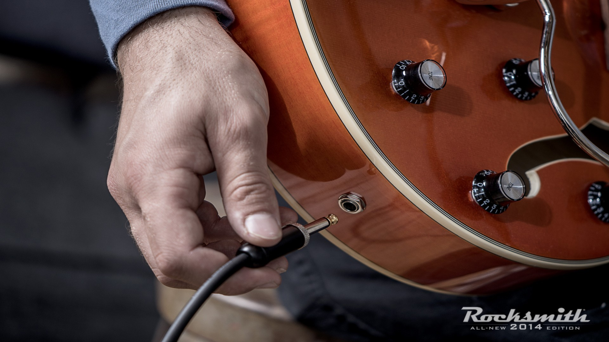

Feito pelos alunos, feito para você!
Aprenda a tocar guitarra ou baixo com o jogo Rocksmith 2014!
19/11 16:33; por Admin

Foto retirada do Google Imagens
Sempre sonhou em tocar bem guitarra ou baixo? Bem, o jogo desenvolvido pela Ubisoft em 2012, a primeira versão do Rocksmith foi lançada prometendo ensinar os jogadores a aprenderem a tocar um dos intrumentos, a guitarra ou o baixo. Os únicos requisitos são obviamente, uma guitarra ou baixo, dependendo de qual instrumento você queira aprender, uma plataforma para rodar o jogo, computador ou pelo console e uma cabo original do jogo para conectar via USB no PC ou console.
Depois de 2 anos, a Ubisoft lançou a segunda versão de Rocksmith, em 2014, dando o nome de Rocksmith 2014, melhorando o visual, ensinos mais detalhados, mais funções e minigames de aprendizagem. O jogo te permite ensinar músicas através de notas, jogar minigames para melhorar suas habilidades, tocar solo, alterar os tones das músicas, ranking de pontos, além da aba de ensino, onde mostra desde o básico até o avançado dependendo do seu intrumento.
Eu, Victor Shirasuna, comprei o jogo em 2015 e desde lá consegui aprender várias técnicas, movimentos, além das músicas disponíveis. Veja um exemplo no vídeo abaixo.
Foto retirada do Google Imagens
Foto retirada do Google Imagens
Adicione um comentário sobre essa notícia: OBS: Esse sistema de comentários só funcionará, quando o domínio do site for pago!